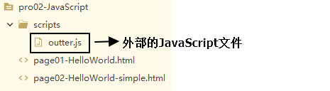
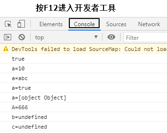

第三节 JavaScript基本语法1、JavaScript代码嵌入方式①HTML文档内②引入外部JavaScript文档2、声明和使用变量①JavaScript数据类型②变量3、函数①内置函数[1]弹出警告框[2]弹出确认框[3]在控制台打印日志②声明函数③调用函数4、对象①使用new关键字创建对象②使用{}创建对象③给对象设置函数属性④this关键字5、数组①使用new关键字创建数组②使用[]创建数组6、JSON①JSON格式的用途②JSON格式的说明③JSON对象和JSON字符串互转[1]JSON对象转JSON字符串[2]JSON字符串转JSON对象
可以参考简化版的HelloWorld
xxxxxxxxxx91<!-- 在HBuilderX中，script标签通过打字“sc”两个字母就可以直接完整生成 -->2<script type="text/javascript">3 4 // 下面是同样实现HelloWorld功能的简化版代码5 document.getElementById("helloBtn").onclick = function() {6 alert("Hello simple");7 };8 9</script>
在script标签内通过src属性指定外部xxx.js文件的路径即可。但是要注意以下两点：

引入方式如下：
x1<body>2</body>34<!-- 使用script标签的src属性引用外部JavaScript文件，和Java中的import语句类似 -->5<!-- 引用外部JavaScript文件的script标签里面不能写JavaScript代码 -->6<!-- 引用外部JavaScript文件的script标签不能改成单标签 -->7<!-- 外部JavaScript文件一定要先引入再使用 -->8<script src="/pro02-JavaScript/scripts/outter.js" type="text/javascript" charset="utf-8"></script>910<script type="text/javascript">11 12 // 调用外部JavaScript文件中声明的方法13 showMessage();14</script>
基本数据类型
数值型：JavaScript不区分整数、小数
字符串：JavaScript不区分字符、字符串；单引号、双引号意思一样。
布尔型：true、false
在JavaScript中，其他类型和布尔类型的自动转换。
true：非零的数值，非空字符串，非空对象
false：零，空字符串，null，undefined
例如："false"放在if判断中
xxxxxxxxxx61// "false"是一个非空字符串，直接放在if判断中会被当作『真』处理2if("false"){3 alert("true");4}else{5 alert("false");6}引用类型
关键字：var
数据类型：JavaScript变量可以接收任意类型的数据
标识符：严格区分大小写
变量使用规则
如果使用了一个没有声明的变量，那么会在运行时报错
Uncaught ReferenceError: b is not defined
如果声明一个变量没有初始化，那么这个变量的值就是undefined
内置函数：系统已经声明好了可以直接使用的函数。
xxxxxxxxxx11alert("警告框内容");
用户点击『确定』返回true，点击『取消』返回false
x
1var result = confirm("老板，你真的不加个钟吗？");2if(result) {3 console.log("老板点了确定，表示要加钟");4}else{5 console.log("老板点了确定，表示不加钟");6}
xxxxxxxxxx11console.log("日志内容");
写法1：
xxxxxxxxxx31 function sum(a, b) {2 return a+b;3 }写法2：
xxxxxxxxxx31 var total = function() {2 return a+b;3 };写法2可以这样解读：声明一个函数，相当于创建了一个『函数对象』，将这个对象的『引用』赋值给变量total。最后加的分号不是给函数声明加的，而是给整体的赋值语句加的分号。
JavaScript中函数本身就是一种对象，函数名就是这个『对象』的『引用』。而调用函数的格式是：函数引用()。
xxxxxxxxxx61 function sum(a, b) {2 return a+b;3 }4 5 var result = sum(2, 3);6 console.log("result="+result);或：
xxxxxxxxxx61 var total = function() {2 return a+b;3 }4 5 var totalResult = total(3,6);6 console.log("totalResult="+totalResult);
JavaScript中没有『类』的概念，对于系统内置的对象可以直接创建使用。
xxxxxxxxxx101 // 创建对象2 var obj01 = new Object();3 4 // 给对象设置属性和属性值5 obj01.stuName = "tom";6 obj01.stuAge = 20;7 obj01.stuSubject = "java";8 9 // 在控制台输出对象10 console.log(obj01);
xxxxxxxxxx91 // 创建对象2 var obj02 = {3 "soldierName":"john",4 "soldierAge":35,5 "soldierWeapon":"gun"6 };7 8 // 在控制台输出对象9 console.log(obj02);
xxxxxxxxxx171// 创建对象2var obj01 = new Object();34// 给对象设置属性和属性值5obj01.stuName = "tom";6obj01.stuAge = 20;7obj01.stuSubject = "java";89obj01.study = function() {10 console.log(this.stuName + " is studying");11};1213// 在控制台输出对象14console.log(obj01);15// 调用函数16obj01.study();17或：
xxxxxxxxxx141// 创建对象2var obj02 = {3 "soldierName":"john",4 "soldierAge":35,5 "soldierWeapon":"gun",6 "soldierShoot":function(){7 console.log(this.soldierName + " is using " + this.soldierWeapon);8 }9};1011// 在控制台输出对象12console.log(obj02);13// 调用函数14obj02.soldierShoot();
this关键字只有两种情况：
xxxxxxxxxx221// 直接打印this2console.log(this);34// 函数中的this5// 1.声明函数6function getName() {7 console.log(this.name);8}910// 2.创建对象11var obj01 = {12 "name":"tom",13 "getName":getName14};15var obj02 = {16 "name":"jerry",17 "getName":getName18};1920// 3.调用函数21obj01.getName();22obj02.getName();
xxxxxxxxxx331// 1.创建数组对象2var arr01 = new Array();34// 2.压入数据5arr01.push("apple");6arr01.push("orange");7arr01.push("banana");8arr01.push("grape");910// 3.遍历数组11for (var i = 0; i < arr01.length; i++) {12 console.log(arr01[i]);13}1415// 4.数组元素反序16arr01.reverse();17for (var i = 0; i < arr01.length; i++) {18 console.log(arr01[i]);19}2021// 5.数组元素拼接成字符串22var arrStr = arr01.join(",");23console.log(arrStr);2425// 6.字符串拆分成数组26var arr02 = arrStr.split(",");27for (var i = 0; i < arr02.length; i++) {28 console.log(arr02[i]);29}3031// 7.弹出数组中最后一个元素32var ele = arr01.pop();33console.log(ele);
xxxxxxxxxx31// 8.使用[]创建数组2var arr03 = ["cat","dog","tiger"];3console.log(arr03);
在开发中凡是涉及到『跨平台数据传输』，JSON格式一定是首选。
xxxxxxxxxx11{key:value,key:value,,key:value}xxxxxxxxxx11[value,value,,value]key的类型固定是字符串
value的类型可以是：
正因为JSON格式中value部分还可以继续使用JSON对象或JSON数组，所以JSON格式是可以『多层嵌套』的，所以JSON格式不论多么复杂的数据类型都可以表达。
xxxxxxxxxx361{2 "stuId":556,3 "stuName":"carl",4 "school":{5 "schoolId":339,6 "schoolName":"atguigu"7 },8 "subjectList":[9 {10 "subjectName":"java",11 "subjectScore":5012 },13 {14 "subjectName":"PHP",15 "subjectScore":3516 },17 {18 "subjectName":"python",19 "subjectScore":2420 }21 ],22 "teacherMap":{23 "aaa":{24 "teacherName":"zhangsan",25 "teacherAge":2026 },27 "bbb":{28 "teacherName":"zhangsanfeng",29 "teacherAge":10830 },31 "ccc":{32 "teacherName":"zhangwuji",33 "teacherAge":2534 }35 }36}
xxxxxxxxxx51var jsonObj = {"stuName":"tom","stuAge":20};2var jsonStr = JSON.stringify(jsonObj);34console.log(typeof jsonObj); // object5console.log(typeof jsonStr); // string
xxxxxxxxxx21jsonObj = JSON.parse(jsonStr);2console.log(jsonObj); // {stuName: "tom", stuAge: 20}